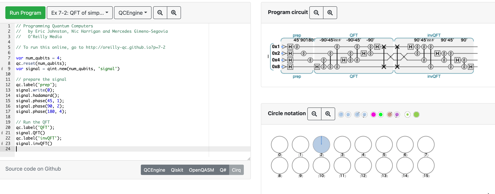

7章 QFT:量子フーリエ変換
7.1
7.2
- ふぇるみうむ氏おすすめのフーリエ変換の資料 → やる夫で学ぶディジタル信号処理
7.3
- https://oreilly-qc.github.io/?p=7-2
- QFT は可逆なので in-place で実行できる。逆変換は
invQFTでできた (7.5.1.2で出てきた)。
 - https://oreilly-qc.github.io/?p=7-3 は 7-2 と一緒。
7.4
- 8バイト = 64ビット = 倍精度浮動小数点数 だけど、普通ビットで表すことが多い気がするので一瞬戸惑った
- 入力状態が実数だと mirror image が現れる
- https://oreilly-qc.github.io/?p=7-5 は 4.5 に書いたブックマークレットを使うときれいに見える。
7.5
7.5.1
- FFT の計算量は \(\mathcal{O}(N \log N) \) (\(N\)は標本数) なので、\(N = 2 ^n\) を代入すると \(\mathcal{O}(n2^n) \)
- QFT の場合は \(\mathcal{O}(m^2) \) から逆算すると恐らく計算量は \(\mathcal{O}((\log N)^2) \)？
- QFT の場合、周波数分布を得るには READ を何度も行わないといけなくて、その回数のオーダーは \(\mathcal{O}(2^m) \) とかになりそう？
7.5.1.1
- 一般に入力信号を QPU レジスタに載せるのは簡単ではない
- 計算量が必要な場合もあるので、 QFT による高速化がキャンセルしてしまう可能性もある
- QFT の結果にアクセスするのが困難
- 結果の一部だけ見るだけで良いアプリケーションとかになら使える
- ショアの因数分解アルゴリズムでは QFT が使われている
7.5.1.2
- 逆QFT https://oreilly-qc.github.io/?p=7-6
- レジスタ準備するときにも使えそう
- 周波数変調 https://oreilly-qc.github.io/?p=7-7
- QFT → 値を足す → invQFT で周波数変調できる
(ここまで 2021/09/04)